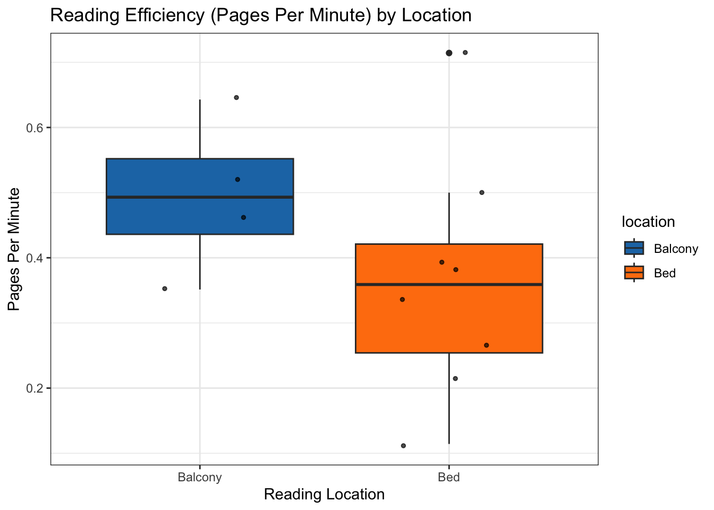
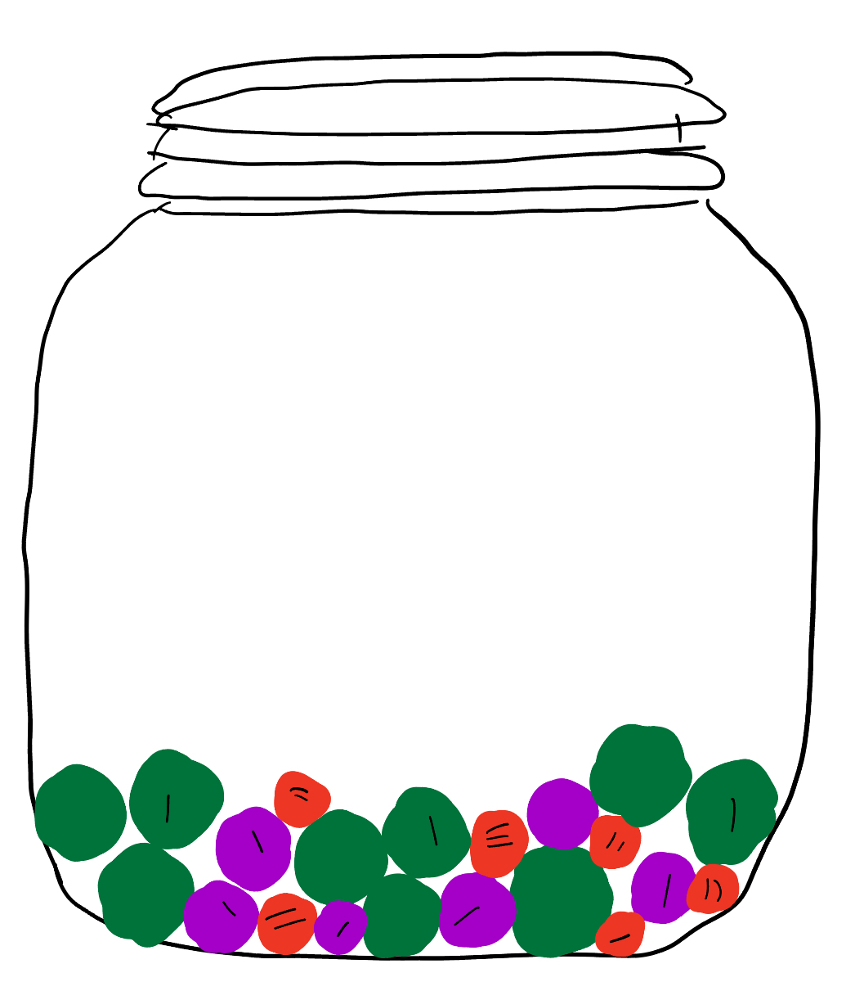
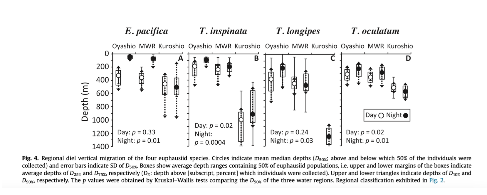

# read in libraries
library(tidyverse)
library(here)
library(flextable)
library(janitor)
library(readxl)
library(officer)
# read in personal data
mydata <- read_csv(here::here("data", "Personal Data Project - Sheet1.csv"))Homework 3
Part 1. Setup
Part 2. Problems
a.
To summarize the data and compare a response variable between categories, I will calculate the median pages per minute, by dividing the numbers of pages read by the total time of the read, for each session to compare reading effectiveness across different locations. This comparison would be informative because different environments might offer varying levels of comfort, light, or distraction which could impact my focus, and consequently, how well I understood the material.
b.
df <- clean_names(mydata) |> # clean column names
# adding pages_per_minute column
mutate(pages_per_minute = ifelse(total_time_of_reading > 0, number_of_pages / total_time_of_reading, 0))
df_summary <- df |> # create new data frame for mean pages per minute
group_by(location) |> # group by location
summarise(
N = n(), # Count of observations in each group
Mean_PPM = mean(pages_per_minute, na.rm = TRUE), # Mean Pages Per Minute
Median_PPM = median(pages_per_minute, na.rm = TRUE), # Median Pages Per Minute
SD_PPM = sd(pages_per_minute, na.rm = TRUE), # Standard Deviation of PPM
IQR_PPM = IQR(pages_per_minute, na.rm = TRUE), # Interquartile Range of PPM
Min_PPM = min(pages_per_minute, na.rm = TRUE), # Minimum PPM
Max_PPM = max(pages_per_minute, na.rm = TRUE)) # calculate the mean
ggplot(df, # plotting the data
aes(x = location, # location on x axis
y = pages_per_minute)) + # Pages per minute on the y axis
geom_boxplot(aes(fill = location)) + # creating boxplot
geom_jitter(width = 0.2, size = 1, color = "black", alpha = 0.7) + # adding the underlying data
scale_fill_manual(values = c( # add different colors than default
"Balcony" = "#1f77b4", # blue for balcony
"Bed" = "#ff7f0e" # orange for bed
)) +
theme_bw() + # add theme for aesthetics
labs( # label function to rename labels
x = "Reading Location", # new x axis title
y = "Pages Per Minute", # new y axis title
title = "Reading Efficiency (Pages Per Minute) by Location" # title for visualization
)
c.
Figure 1. Reading Efficiency (Pages Per Minute) by Location. Box plots display the distribution and summary statistics of reading efficiency at two locations: the balcony and the bed. While both locations show similar median reading speeds, the balcony shows a tighter distribution compared to the wider spread of values observed for reading in bed.
d.
table1 <- flextable(df_summary) |> # create table using flextable
colformat_double(digits = 2) |> # rounding to nearest decimal
set_header_labels( # changing header labels
location = "Location", # capitalize location
N = "Count", # cleaning the header names
Mean_PPM = "Mean PPM",
Median_PPM = "Median PPM",
SD_PPM = "Std. Dev. PPM",
IQR_PPM = "IQR PPM",
Min_PPM = "Min PPM",
Max_PPM = "Max PPM"
) |>
autofit() |> # autofit function to make everything fit
theme_zebra() |> # theme
align(align = "center", part = "all") |> # center align all parts of the table
border_outer(border = fp_border(color = "black", width = 2)) |> # adding outer border
border_inner(border = fp_border(color = "grey", width = 1)) # adding inner border
table1 # displaying the tableLocation | Count | Mean PPM | Median PPM | Std. Dev. PPM | IQR PPM | Min PPM | Max PPM |
|---|---|---|---|---|---|---|---|
Balcony | 4 | 0.50 | 0.49 | 0.12 | 0.12 | 0.35 | 0.64 |
Bed | 8 | 0.37 | 0.36 | 0.18 | 0.17 | 0.11 | 0.71 |
Problen 2, Affective visualization
a.
An affective visualization for my personal reading data project can be visually represented with orbs in a jar, where each orb represents an individual reading session. The color of the orb can represent the comprehension: vibrant green colors for high comprehension, fading from purple to muddy brown hues for low comprehension. The surface of the orb can represent the distractions, becoming rougher, more jagged as the number of distractions grows. Also, the total time spent reading can be represented through the size of the orb.
b.

c.

d.
My affective visualization shows a jar containing many orbs. Each orb is an independent reading session, which is affected by length of reading, comprehension, and distractions. I took inspiration from the examples provided of Jill Pelto’s paintings. I drew my peice on my iPad. I started off with a drawing of a jar. I then filled the jar with different size orbs that represent different sessions of reading. Each orb is to be different in size, color, and defects on the surface.
Problem 3. Statistical Critique
a.
The statistical tests used by the author to address their main research question are: Welch’s t-test, Mann–Whitney’s U-test, Kruskal–Wallis test, Spearman’s correlation coefficient by rank test.

b.
The author clearly represents their statistics in the figure, with well labeled axes and depth scale that increases downwards. Each of the four species include test statistics such as medians, standard deviations, interquartile ranges, and depth extremes. P-values from Kruskal–Wallis tests are clearly displayed, making statistical comparisons across regions clear and easy to interpret.
c.
The author handles visual clutter well by using distinct, consistent symbols (open circles, closed circles, triangles, box plots) and seperating each species into their own panel. The data:ink ratio is high, but the visual elements have meaningful information (depth ranges, medians, p-values). Overall, this figure is information dense yet clear and visually effective.
d.
I would recommend adding a sample size for each box plot in the legend, which can help readers evaluate the variability of the summary statistics. Instead of using open and closed circles to differentiate between night and day, I would recommend adding color to enhance the immediate visual distinction without overwhelming the figure, I would add clarity in the legend, specifically the triangles and boxes to make it easier to understand what they represent. Lastly, a summary of the findings at the bottom of the figure that quickly helps the reader grasp significant patterns without having to interpret each subplot individually.